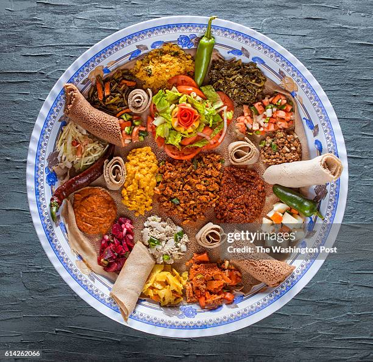

Aynet recipe

Aynet
Aynet is popular and traditional Ethiopian dish.
Here are the main ingredient
- Spicy lentils (miser)
- Cabbage and potator(Atkilt)
- Collard Greens(gomen)
- Garlic and spices
- Yellow Split peas stew(Alicha kek)
Steps
- Make injera
- prepare each stew
- Serve
Home Page